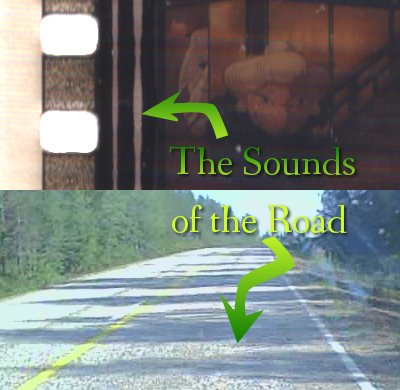

The Sounds of the Road
Note: This was originally published in my blog in August 31, 2011. The contents have been slightly revised as of June 2025. I will try to recover the images and video at some later point as this site improves.
Once upon a time, there was one bright guy called Eric Magnus Campbell Tigerstedt. The turn of the previous century was a difficult time for a Finnish inventor, because computers didn’t exist yet and they couldn’t just get up and invent IRC, Linux, SSH, Angry Birds or their ilk. So he decided to put a synchronised optical soundtrack on motion picture film. The next best thing, I guess.
Some of his ideas survive to this day, and still cause innumerable headaches in weird places.
There’s one odd thing about optical sound tracks: Once you’ve seen one, and you have a peculiar mental capability, you can find such sound tracks everywhere. But most people don’t have the mental capability to actually listen to those soundtracks.

My father is, for a lack of better word, a cinema enthusiast – as in he has, and does, actually run cinemas and knows the ins and outs of film projectors.
He had the mental capability to see soundtracks everywhere. We’ve driven to a lot of places together, of course, and one day, he noticed that the shadows of roadside trees actually look a lot like optical film soundtrack. He tossed around ideas about what such a soundtrack would actually sound like.
Yes, shadows on the road really do look like an optical sound track. Drive past a shadow of a group of trees - brrrlp!… Yes, it’s quite easy to imagine that that’s what it sounds like. The road is the medium. The tree shadows are a signal. The signal is the trees.
One day, he talked about attaching a film projector’s sound unit to the car to listen to those shadows. And suddenly, it dawned to be that I could actually answer this strange question on the sounds of the tree shadows once and for all.
So: What are those optical soundtracks, anyway? Basically, they’re methods for recording the amplitude of a sound signal. As film passes through the sound unit, a light shines through the film and is turned into variations of electric current in a light resistor of some sort. This signal then goes to the loudspeakers; the speaker cones basically move back and forth with the same amplitude as the film’s soundtrack dictates. The cone movements turn into air pressure changes. Us possessing mortal human’s ears perceive air pressure changes as sound. This is all simple enough in theory.
And, of course, simple enough theories can be extrapolated just as easily. As it turned out, I was actually carrying a device that was also designed to record light intensity changes. Specifically, it was a device capable of recording up to 307,200 different intensities on three colour channels, at the resolution of 30 measurements per second. In other words, I was carrying my 1st-gen Creative Vado video camera, which is capable of recording 640x480 XviD video - either in just slightly crappy or really crappy bitrate. In general, I like the camera a lot, even when it’s far from HD quality. (Much better than the camera on my cellphone, anyway…)
With a piece of toilet paper to scatter the light, I was able to record a bit of the roadside light intensity changes. Easy enough. And being a software guy, actually turning this video into sound signal was easy enough.
The idea is simple enough: I just average each pixel in each frame and generate some sound signal based on that. The software itself was written in Processing. Because I was doing this on my PowerBook G4 which didn’t have proper GSVideo binaries, and the Processing’s builtin video API didn’t actually work too well (I suppose the support for a long-deprecated QuickTime for Java is fading), I also used FFmpeg to convert the video to separate frames and back.
Now, there are two big sticking points with the sound signal. First of all, optical soundtrack in film is not limited by the framerate of the original film. Modern digital cinema has, in fact, standardised on 48 kHz and 96 kHz samplerates, which to my non-expert understanding sounds like it has surpassed the fidelity of analog audio storage. (It has certainly surpassed the storage space problems in analog audio; optical soundtracks can only take up so much space on the edges of the film. If you look at the Wikipedia article on 35mm film, you can easily see what kind of difficulty they had, what with trying to fit the signal on the edges of the film and even between the film perforations.)
As I was able to record 30 frames per second, that means the sound has sample rate of 30 Hz. A layman explanation: imagine me being able to make a popping sound at varying pitches, at 30 times a second. What would you hear? If you guessed “whirring of some sort”, you guessed right. With sample rate high enough, those pops would meld into a continuous sound, much like how individual images, when shown fast enough, meld into a moving picture. Now, I’m not really an audio signal expert as such, but I’m sure using 30 Hz sample rate on any transmission medium is low enough to make Nyquist rise from his grave and kick my butt.
So, to overcome this ridiculously low samplerate that doesn’t actually translate into any kind of a continuous sound, I’m actually generating a triangle wave that is modulated by the signal strength – that is, the image frame’s average light intensity. And, to bring the sound to audible range, I actually raised the pitch in Audacity.
Another fun problem with the signal was the sample resolution. The picture was 8-bit RGB. Which means, basically, that the light intensity is given as a value between 0 and 255. It may sound a lot, but it actually isn’t. Sound can be stored in 8-bit format, but the resulting sound quality is not very good; for this reason CDs use 16 bits and digital cinema uses 24 bits, for example. However, because Processing uses Java and Java makes dealing with raw binary data somewhat difficult (Processing is only able to save raw 8-bit byte arrays, for example), 8-bit sound it is.
Yet, there was one pretty big surprise waiting for me. I’ll let you watch the resulting film first, however.
[VIDEO - will re-post to YouTube eventually!]
The surprise? You may remember the part about brrrlp! - well, as it turns out, that’s not true.
What my father assumed, and what I assumed, was that there would be only noise when we drive past the shadows. Those shadows are the signal. This made sense then, but that’s not true at all. The light is the signal, both in the optical film soundtracks… and in this experiment of ours. Tree shadows on the road are black against white background. Film soundtracks? White against black background.
And it’s a small discovery that just reinforces one rule that’s probably part of the Murphy’s Laws: sometimes, people just don’t notice when the minus sign is supposed to be a plus sign, and vice versa.
But still, I’m glad I’m able to figure out these Great Mysteries of Life with the help of computer science. One mystery down. A lot more to go.